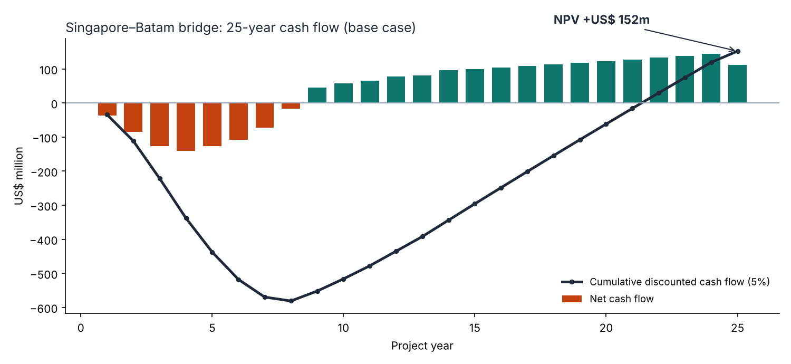
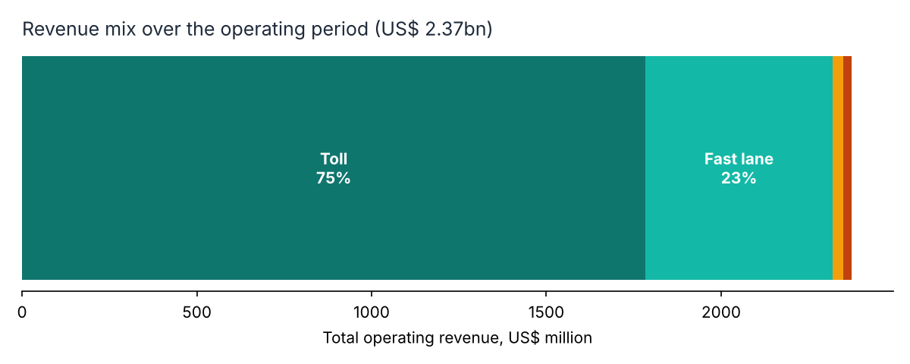

CEGE0016 Finance & Economics for Engineers · Team of 10 · 2026
Singapore–Batam Bridge: 25-Year Financial Model
Would a USD 800 million cross-border bridge pay for itself? We built a 25-year cash flow model covering construction, operating costs and four revenue streams, then tested how robust the answer was.
What I did
- Helped build the model forecasting annual cash flows, construction and O&M costs, and toll and non-toll revenue from 19,713 opening daily vehicles
- Applied NPV, cash-flow and scenario analysis. The base case gives an NPV of +US$ 152m at a 5% discount rate, with tolls making up about three-quarters of revenue
- Wrote the team's mixed funding strategy: SPV equity, bank debt during construction, Viability Gap Funding, guarantees and Asian Development Bank support, then refinancing into long-term bonds
- Assessed wider impacts on connectivity, trade and regional development